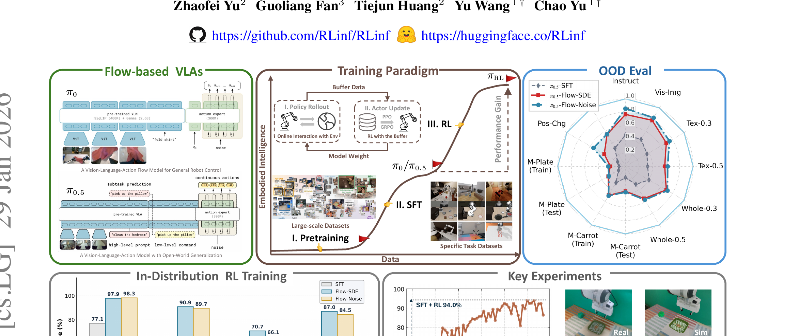

πRL: Online RL Fine-tuning for Flow-based Vision-Language-Action Models
Chen 等 · PKU / Tsinghua / Microsoft Research Asia · 2025 · arXiv:2510.25889 · Zotero 7ZFEC44C
它打通的是算法接口：没有可定义的随机策略与 log-prob，PPO 公式即使写出来也没有统计意义。
§1 Introduction：作者为什么必须做这篇工作
π0、π0.5 一类 VLA 用 flow matching 生成动作，但 PPO 等策略梯度需要动作 log-likelihood；确定性 ODE 采样并不给出易算的离散动作概率。直接把 PPO 套上去，要么概率比不成立，要么反传多步 ODE 成本过高。
πRL 给出两条互补路径。Flow-Noise 把去噪离散成可学习噪声转移，从而获得逐步 log-prob；Flow-SDE 把 ODE 转成带随机性的 SDE，并把内部去噪与外部环境组合成两层 MDP。目标是让通用 RL 算法真正能对 flow VLA 做在线探索。
展开原文 · 核心动机
“Flow-Noise models the denoising process as a discrete-time MDP”
§2 Related Work：它接在哪些路线之后
DPPO 已把扩散去噪视为内部决策过程，但扩散转移天然随机；flow ODE 原本是确定性的。ReinFlow 通过可学习噪声改造 flow policy，πRL 则明确面向大型 VLA，并给出 Flow-Noise 与 Flow-SDE 两种接口。
与 SAC Flow 的 off-policy Q 梯度路线不同，πRL 更强调可计算 likelihood ratio，使 PPO 类 on-policy 更新成立；与 QGF 的纯推理引导相比，它会改变 VLA policy。
§3 问题设定：状态、动作与反馈
外层 MDP 是机器人观测—动作—奖励；内层 MDP 是从噪声到动作的 flow steps。Flow-Noise 为每个内层转移定义概率，Flow-SDE 则通过随机微分方程提供探索。
§4 方法总览：沿原图走一遍
上一节确定了学习接口；现在看论文原图，追踪观测如何变成动作、环境反馈又如何回到可训练模块。

1. 用 π0/π0.5 的 SFT checkpoint 初始化
从 π0/π0.5 的 SFT checkpoint 起步，保留视觉语言主干与已有动作流形。先用无奖励 rollout 验证 flow sampler 与原策略一致，避免把 sampler 改造误当成 RL 收益。
输入是什么：随机噪声，以及当前画面、语言指令或机器人状态等条件信息。噪声只是生成过程的起点，不是机器人真的要执行的动作。
这一步究竟做什么：从 π0/π0.5 的 SFT checkpoint 起步，保留视觉语言主干与已有动作流形。先用无奖励 rollout 验证 flow sampler 与原策略一致，避免把 sampler 改造误当成 RL 收益。
输出到哪里：一个或多个候选未来、动作或轨迹，以及必要的中间状态。这个结果会交给下一步“把确定性流转成 Flow-Noise 或 Flow-SDE”继续处理。
为什么不能省略：它把未经处理的原始问题变成后续模块可以计算的输入，是整条链路的起点。
2. 把确定性流转成 Flow-Noise 或 Flow-SDE
Flow-Noise 为离散 flow step 加入可学习高斯转移，得到精确 log-prob；Flow-SDE 则把 ODE 转成随机微分方程，并与环境交互组成两层 MDP。两条路径都把确定性生成器变成可探索策略。
输入是什么：来自上一步“用 π0/π0.5 的 SFT checkpoint 初始化”的产物：一个或多个候选未来、动作或轨迹，以及必要的中间状态。本步骤还会按论文设置读取当前条件、时间步或训练信号。
这一步究竟做什么：Flow-Noise 为离散 flow step 加入可学习高斯转移，得到精确 log-prob；Flow-SDE 则把 ODE 转成随机微分方程，并与环境交互组成两层 MDP。两条路径都把确定性生成器变成可探索策略。
输出到哪里：一个或多个候选未来、动作或轨迹，以及必要的中间状态。这个结果会交给下一步“收集在线 rollout 并计算优势与概率比”继续处理。
为什么不能省略：随机起点允许模型表达多种合理结果；逐步生成则把无结构噪声限制到训练数据支持的动作或视频分布。
3. 收集在线 rollout 并计算优势与概率比
在线收集外层环境轨迹，同时保存每个动作对应的内层 flow path。优势来自任务回报，新旧策略概率比来自内层转移；两者必须按同一 action chunk 对齐。
输入是什么：来自上一步“把确定性流转成 Flow-Noise 或 Flow-SDE”的产物：一个或多个候选未来、动作或轨迹，以及必要的中间状态。本步骤还会按论文设置读取当前条件、时间步或训练信号。
这一步究竟做什么：在线收集外层环境轨迹，同时保存每个动作对应的内层 flow path。优势来自任务回报，新旧策略概率比来自内层转移；两者必须按同一 action chunk 对齐。
输出到哪里：一个或多个候选未来、动作或轨迹，以及必要的中间状态。这个结果会交给下一步“用 PPO 类目标更新 flow action expert”继续处理。
为什么不能省略：学习算法只能从它见过的经历中改进；这一步决定训练数据是否覆盖成功、失败和恢复状态。
4. 用 PPO 类目标更新 flow action expert
PPO 类 clipped objective 更新 flow action expert。clip 限制单次更新幅度，Flow-Noise/Flow-SDE 提供合法概率；若缺任一部分，所谓 PPO 要么统计量不成立，要么会把基座推离动作分布。
输入是什么：来自上一步“收集在线 rollout 并计算优势与概率比”的产物：一个或多个候选未来、动作或轨迹，以及必要的中间状态。本步骤还会按论文设置读取当前条件、时间步或训练信号。
这一步究竟做什么：PPO 类 clipped objective 更新 flow action expert。clip 限制单次更新幅度，Flow-Noise/Flow-SDE 提供合法概率；若缺任一部分，所谓 PPO 要么统计量不成立，要么会把基座推离动作分布。
输出到哪里：一套固定且可复现的输入条件，后续所有模型都必须在这套条件下生成或行动。这是图中这条链路的最终产物，随后会进入真实执行、模型更新或指标评测。
为什么不能省略：前面的数据或分数本身不会自动改变模型；必须通过损失函数把误差信号变成参数更新。
§5 机制细拆：为什么这个接口可能有效
外层任务优势被广播到同一动作 chunk 的内层流步骤；clip 限制一次更新偏离旧策略。
主要更新 flow action expert；视觉语言主干可冻结或受控微调，具体依实验配置。
它打通的是算法接口：没有可定义的随机策略与 log-prob，PPO 公式即使写出来也没有统计意义。
§6 目标函数：公式逐项读
下面的教学化表达抓住论文的主要更新方向；读它时不要只看符号，要检查回报作用在哪个变量、哪些部分保持冻结。
- $a^K$
- 初始噪声动作。
- $a^0$
- 最终送给机器人的干净动作 chunk。
- $p_\theta(a^{k-1}|a^k,s)$
- Flow-Noise 定义的单步随机转移，因此能计算 log-prob。
- $K$
- 内部 flow 步数；更多步更灵活但增加 RL 信用分配长度。
§7 训练与评测：数字在什么条件下成立
在多种机器人基准上以 flow VLA 为基座，比较 SFT、Flow-Noise、Flow-SDE 与不同 RL 设置，并覆盖 ID/OOD 场景。
| 学习接口 | 外层 MDP 是机器人观测—动作—奖励；内层 MDP 是从噪声到动作的 flow steps。Flow-Noise 为每个内层转移定义概率，Flow-SDE 则通过随机微分方程提供探索。 |
|---|---|
| 信用分配 | 外层任务优势被广播到同一动作 chunk 的内层流步骤；clip 限制一次更新偏离旧策略。 |
| 更新范围 | 主要更新 flow action expert；视觉语言主干可冻结或受控微调，具体依实验配置。 |
| 实验覆盖 | 在多种机器人基准上以 flow VLA 为基座，比较 SFT、Flow-Noise、Flow-SDE 与不同 RL 设置，并覆盖 ID/OOD 场景。 |
§8 结果怎么读：证据与归因
论文报告 RL 在分布内与分布外任务均有明显提升；读结果时要区分 Flow-Noise 的精确 likelihood 优势与 Flow-SDE 的探索效率，而不是只看总平均。
§9 复现与工程检查
严格复现 ODE-to-SDE 系数、旧/新策略概率比和动作归一化；记录内部 flow step 与外部环境 step 的双重 horizon；先检查无奖励时能否还原 SFT policy。
- 先复现冻结的 SFT/BC 基线，再打开 RL 或偏好更新。
- 同时记录环境步、墙钟时间、人工干预、策略版本和推理延迟。
- 逐任务保存失败轨迹，避免平均成功率掩盖分布偏移。
§10 适用边界与研究启发
on-policy 真实机器人数据昂贵；两层 MDP 延长信用链；大幅更新仍可能损伤 VLA 的跨任务先验。